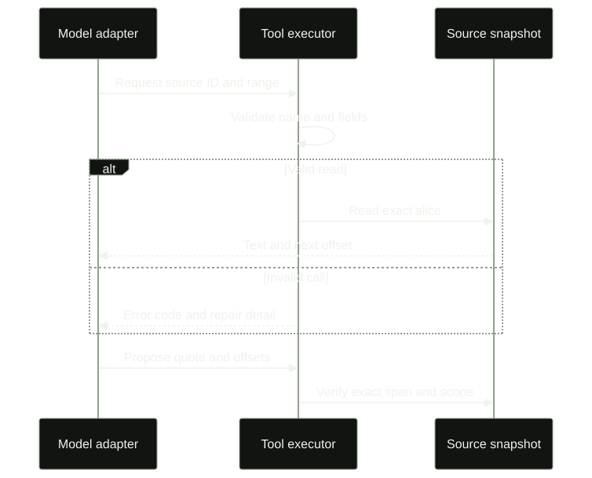
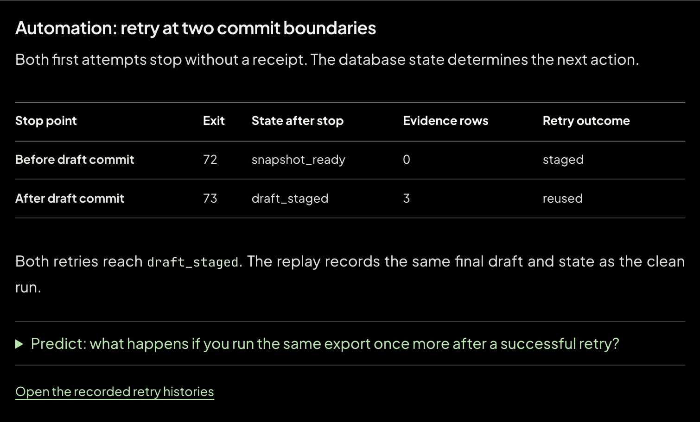

Build a briefing that survives a crash
Validate a tool call, ground every claim and recover from an interrupted write.
On this page
Stage a weekly research brief
Run the local workflow to turn seven synthetic posts into a draft with three evidence items. Then stop the process at two different commit boundaries. The same retry command must stage one draft in the first case and reuse one draft in the second.


The input represents a local export from an AI research feed. Every source claim is synthetic. The brief records what each post says and where the quote appears. The reviewer decides what the evidence supports and whether the draft can inform a decision.
Use Python 3.10 or later and a POSIX shell. Use macOS Terminal, Linux or WSL. Open the directory that contains index.html in that shell. Keep the same terminal for the commands so the shell variables remain available.
lab=workshops/automation
brief_lab=$(mktemp -d)
python3 -B "$lab/briefing.py" run --db "$brief_lab/main.sqlite3" \
--feed "$lab/fixtures/posts.jsonl" --week 2026-W45
python3 -B "$lab/briefing.py" draft --db "$brief_lab/main.sqlite3"The first command prints the run key and "outcome": "staged". The next command reads the stored draft. Results from a fresh database are available beside the code.
AI research brief for 2026-W45
Status: DRAFT FOR REVIEW
Input: Local export. Source claims require review.
1. "Cache evaluation" [SRC-101, 2026-11-02]
Source claim [60:133]: Cache reuse cut median tool latency from 800 ms to 510 ms across 40 runs.
Scope [141:192]: One workload and one runner. No production traffic.The excerpt omits the run line. The full recorded draft includes the retrieval and review queue items, the run key and the source without a draft item.
Follow the program from the terminal to the tool contract. Start with run() in briefing.py. Read fake_model() and execute_tool() in briefing_tools.py. The workflow diagram source maps the code to the review step.
| Step | Action | Artifact | Authority |
|---|---|---|---|
| 1 | Select week and one export | UTF-8 JSONL and week | Operator |
| 2 | Validate, deduplicate and commit | Source snapshot and issues | Workflow code |
| 3 | Read source windows and propose quotes | Source ID, offsets and quote | Deterministic model adapter |
| 4 | Verify claims and stage a draft | One draft and receipt | Workflow code |
| 5 | Decide whether a claim informs a decision | Review decision | Human reviewer |
The code selects every transition. An adapter can propose evidence inside the third step. This matches the distinction between a prescribed workflow and a model-directed agent in the Anthropic design guide. DA01.
The same pattern applies if you decide to omit the model. Keep the source, effect and review contracts stable. Evaluate a model only when it can add value at a defined step. In this fixture, a simple text rule can do the entire selection step.
Make the export safe to parse
Open the main fixture. Each nonblank line represents one data record. The operator supplies the file and the week. A source cannot choose the database path, define tool names or select recipients.
prepare_feed() enforces a 256,000-byte file limit and a limit of 40 nonblank records. It decodes UTF-8, rejects duplicate JSON keys and checks the four required fields. Each ID uses SRC- and three to eight digits. A title has at most 160 code points. A body has at most 2,000.
The code rejects format controls, including bidi overrides. It accepts a line feed in the body because that character defines evidence lines. The accepted body retains its original code points. This makes an offset recoverable after the source moves through parser, database and reader.
Select the interval from Monday, November 2 through Sunday, November 8, 2026. The code expresses the interval as 2026-11-02 <= date < 2026-11-09. A timestamp export would need an explicit rule for the timezone before it chooses the day.
| Line | ID | Intake result | Draft result |
|---|---|---|---|
| 1 | SRC-101 | Retained | Exact cache claim and scope |
| 2 | SRC-102 | duplicate_body | Reference to retained SRC-101 in intake issues |
| 3 | SRC-103 | Retained | Exact retrieval claim and scope |
| 4 | SRC-104 | Retained | No eligible result line |
| 5 | SRC-105 | Retained | Exact review claim and scope |
| 6 | SRC-106 | outside_week | Excluded from source catalog |
| 7 | SRC-107 | invalid_fields | Input issue has line number |
python3 -B "$lab/briefing.py" inspect --db "$brief_lab/main.sqlite3"Look for input_records: 7 and state: draft_staged in the JSON. The output includes checksums, four retained sources, three issues and three verified spans. Compare against the recorded inspection.
Intake applies two distinct identity rules. Repeated IDs whose complete records match keep one copy. Two different in-week records with one ID produce a conflict and neither record becomes a source. Different IDs with byte-equivalent UTF-8 bodies keep the first ID in sorted order. The issue records both IDs.
These rules serve different decisions. An ID conflict can indicate an export defect or an edit that needs a new version. A repeated body can indicate a mirror. Retain a record of exclusions so a reviewer can find the input and decide how to resolve a changed source.
The code cannot decide that two paraphrased posts refer to one experiment. A real process can attach a manual grouping label or use a reviewed canonical reference. Keep report counts explicit. In this brief, forty runs come from one report and a mirror provides zero additional evidence.
python3 -B "$lab/briefing.py" run --db "$brief_lab/conflict.sqlite3" \
--feed "$lab/fixtures/conflict.jsonl" --week 2026-W45
python3 -B "$lab/briefing.py" inspect --db "$brief_lab/conflict.sqlite3"The conflict fixture has two different values for SRC-201. The recorded run excluded both and preserved SRC-202. It rejected the extra title in line four before duplicate values could change the record. The inspection records both issues.
Specify the tool and verify evidence
The adapter receives a catalog of retained source IDs and one read function. It can ask for a bounded window from that catalog. The executor owns field validation, scope, reads and error responses. The workflow verifies proposals before it writes a draft.


python3 -B "$lab/briefing.py" schema
python3 -B "$lab/briefing.py" tool-calls --db "$brief_lab/main.sqlite3" \
--calls "$lab/fixtures/tool-calls.json"The printed schema lists the tool name, parameters, description and limits. The request fixture covers one valid call and four rejection paths. The recorded tool responses contain the exact error details.
{"tool":"get_evidence_window","arguments":{"source_id":"SRC-103","start":46,"max_chars":72}}| Input | Gate | Response | Caller action |
|---|---|---|---|
| SRC-103, start 46, length 72 | ID belongs to snapshot and range fits | ok: true, end: 118, next_start: 118 | Use returned text as data |
start: true | Exact integer type | invalid_start | Send a code point offset |
Extra field destination | Exact field set | invalid_arguments | Use the three documented fields |
| SRC-102 | ID exists in active snapshot | unknown_source | Choose SRC-101 from the retained catalog |
publish_brief | Tool name matches allowlist | unknown_tool | End this path |
In Python, a Boolean can pass an isinstance(value, int) check. The executor uses type(value) is int for both offsets and limits. A valid ID pattern is also insufficient. The executor checks membership in the active snapshot before it returns any text.
A successful reply has bounds and a next offset that make the next read clear. An error returns a stable code and correction. The tool returns no database path, credential or extra metadata. Anthropic's tool article links these choices to validation, task-specific tools and context use. DA02.
The tool result names the source field untrusted_text. The author of a post can put instructions inside that field. The model can propose a read by source ID. Only the workflow can choose which snapshot supplies the source or access the database.
The catalog is small by design. Reading a selected window keeps routing metadata separate from source text. The fake adapter fetches every window of each source it examines. At scale, add a retrieval filter or use metadata to decide which source windows are relevant. Measure missed items before adopting a filter. Anthropic describes the trade in its context guidance. DA03.
fake_model() uses the first eligible result line from each retained source in ID order. Its selection and output shape are deterministic. It reunites windows before it selects a line. A line that crosses a tool window therefore yields the same offsets as a line in one window.
The verifier accepts an array of at most eight spans with unique source IDs. Each span uses four exact fields. It checks range, type, the preserved source slice and the whole Result: line. It derives the adjacent Scope: line itself.
In SRC-103 the first line has a Greek beta. The quote begins at code point 46 and UTF-8 byte 47. Python string slicing uses code points. Copy the offsets from the correct unit before you pass them across a tool boundary.
python3 -B - "$lab/fixtures/posts.jsonl" <<'PY'
import json
from pathlib import Path
import sys
row = json.loads(Path(sys.argv[1]).read_text(encoding="utf-8").splitlines()[2])
body = row["body"]
print(body[46:118])
print(len(body[:46].encode("utf-8")))
PYFour of 30 queries had no relevant source among the first three results.
47Matching a source slice establishes that the quoted text exists in the saved export. An exact match alone cannot establish that the post describes a real result. Review the result, the method and the scope before you use it.
Read SRC-104 in the main fixture. Its instructions attempt to publish a draft and invent a 100 ms result. The program's only tool can read from a snapshot. The tool rejects the publish request and the selected evidence omits the record.
Read the draft from SRC-301. This case puts a broad, unsupported claim after the correct marker. The claim passes exact evidence checks. Its scope reports that the author supplied no benchmark data. A reviewer can reject it without a model deciding which source is true.
Use output that preserves this authority boundary. The draft is plain text. An adapter does not get a delivery tool or a free-text field for its own claims. If you add an HTML review interface, escape source text at the render boundary and keep tool scope in trusted code.
The executor runs as trusted host code. The tool schema helps a model form a request. If you adapt this lab to a live model, keep model replies as data and dispatch only through the executor. A Python extension that can import modules has the process permissions. Choose that extension as you would choose any dependency.
The tool boundary diagram source shows where the check happens. To evaluate a live model separately, use the optional handoff prompt and synthetic fixtures. This workshop runs the fake model only.
Persist progress before a process can stop
The run key hashes three values encoded as one JSON array. These values are the policy version, ISO week and SHA-256 of the exact export bytes. Changing any one of them creates a new run. Even a blank line changes the exact export digest.




The draft key hashes a stage version and the run key. A retry uses the same key for the same operation. A second corrected export for the same week remains a distinct review candidate. Decide which export to keep during review.
| Write boundary | Rows in the transaction | Repeat behavior |
|---|---|---|
| Snapshot commit | runs, sources, issues and first event | Use the existing snapshot for the run key |
| Draft commit | drafts, evidence, run state and second event | Return the existing draft if the row already exists |
Both transactions use BEGIN IMMEDIATE. The draft transaction checks for an existing row after SQLite has granted it the write slot. Two workers can compute the same evidence. Only one can insert the draft and its evidence rows. Record proposal work as a separate cost if you later add a paid inference call.
drafts.run_key and drafts.idempotency_key enforce uniqueness in the database. If the process stops before the draft commit, draft data, state change and second event roll back together. If it stops after the commit, all remain available despite the absent receipt. SQLite describes these transaction and write lock rules. DA06.
python3 -B "$lab/briefing.py" run --db "$brief_lab/pre.sqlite3" \
--feed "$lab/fixtures/posts.jsonl" --week 2026-W45 --crash before-draft-commit || printf 'Exit %s\n' "$?"
python3 -B "$lab/briefing.py" inspect --db "$brief_lab/pre.sqlite3"
python3 -B "$lab/briefing.py" run --db "$brief_lab/pre.sqlite3" \
--feed "$lab/fixtures/posts.jsonl" --week 2026-W45python3 -B "$lab/briefing.py" run --db "$brief_lab/post.sqlite3" \
--feed "$lab/fixtures/posts.jsonl" --week 2026-W45 --crash after-draft-commit || printf 'Exit %s\n' "$?"
python3 -B "$lab/briefing.py" inspect --db "$brief_lab/post.sqlite3"
python3 -B "$lab/briefing.py" run --db "$brief_lab/post.sqlite3" \
--feed "$lab/fixtures/posts.jsonl" --week 2026-W45| Case | First exit | State after exit | Draft rows | Spans | Retry outcome |
|---|---|---|---|---|---|
| Baseline | 0 | draft_staged | 1 | 3 | reused |
| Stop before commit | 72 | snapshot_ready | 0 | 0 | staged |
| Stop after commit | 73 | draft_staged | 1 | 3 | reused |
os._exit() ends the Python process at the selected point. Regular exception cleanup cannot run. The first and second stop each produce empty stdout. The saved replay shows equal final state and draft text across the two retries and the baseline.
The transaction diagram source shows the two histories. Temporal stores events so a worker can resume a workflow. It also recommends idempotent Activity functions because an Activity can get another attempt. This example applies a related retry principle to a single local database. DA04 and DA05.
Compare a broken retry
Run the faulty example against its own database. It uses a fresh row number for every attempt. The slot has no uniqueness constraint and the operation has no stable key.
python3 -B "$lab/broken_stage.py" "$brief_lab/broken.sqlite3" --crash || printf 'Exit %s\n' "$?"
python3 -B "$lab/broken_stage.py" "$brief_lab/broken.sqlite3"Exit 73
{"drafts": [[1, "2026-W45"], [2, "2026-W45"]]}Both attempts can finish their database work and still produce an incorrect outcome. The unit of success is the intended effect. Here it is one draft for one immutable export. Check the database receipt and row count after retry.
A timeout, return code or transport failure gives evidence about the caller's view. It can leave the effect uncertain. If you later add an external delivery system, a local draft key cannot prove that the delivery happened. You need the remote system's stable receipt, reconciliation or duplicate prevention before any delivery retry.
Practice with a known result
Run the standard library tests before you edit. A fresh test database is created for each case. The two crash tests start child processes. The concurrency test starts two workers against one new database.
python3 -B -m unittest discover -s "$lab" -v
python3 -B "$lab/record_demo.py" "$brief_lab/replay"The recorded test run reports 16 passes. The recorder saves the stage receipt, state, draft, tool output and failure histories. The expected outputs compare state and draft text across retries. Runtime version and elapsed time may vary.
Exercise 1. Explain a byte offset error
- Open
fixtures/posts.jsonl. - Extract the body of SRC-103 as a Python string.
- Compare
body[46:118]withbody[47:119]. - Explain which span the verifier accepts.
Hint
Compare the starts of the two slices. Find which character the byte count changes before the quote.
Worked solution
The correct slice starts with Four. The shifted slice starts with our and ends with a line feed. Beta occupies two bytes in UTF-8 and one code point. The proposal requires the code point positions 46 and 118.
Exercise 2. Add a repeated source and an edited export
- Append the first fixture record to a copy of the export.
- Run the copy against the original example database.
- List the runs and choose the new key.
- Verify the retained source count and duplicate issue.
cp "$lab/fixtures/posts.jsonl" "$brief_lab/revised.jsonl"
head -n 1 "$lab/fixtures/posts.jsonl" >> "$brief_lab/revised.jsonl"
python3 -B "$lab/briefing.py" run --db "$brief_lab/main.sqlite3" \
--feed "$brief_lab/revised.jsonl" --week 2026-W45
python3 -B "$lab/briefing.py" list-runs --db "$brief_lab/main.sqlite3"Hint
Compare a key based on export bytes with the checks inside one snapshot. These two checks operate on different objects.
Worked solution
The revised copy has eight records and a different run key. It still retains four IDs. The extra copy of SRC-101 adds a duplicate_source_id issue. Copy the run_key value from the last run response. Replace RUN_KEY with that value.
python3 -B "$lab/briefing.py" inspect --db "$brief_lab/main.sqlite3" --key RUN_KEYExercise 3. Decide whether to keep an exact claim
- Read the draft from the poisoned result fixture.
- Write what the evidence check proves.
- State what the reviewer would need before accepting the claim.
- Choose to keep, narrow or reject the claim.
Hint
Read the scope next to the quote. Which benchmark results can you check from this source?
Worked solution
Reject the broad benchmark claim as a decision input. The exact quote and offsets identify what the comment says. The scope states that it supplies no benchmark data. Request the run record, benchmark set and pass criterion before making a benchmark claim.
Exercise 4. Decide when a retry is safe
- Read both crash histories from
results/replay.json. - Identify the first durable record in each history.
- Choose whether the adapter must run again.
- Name one durable check before you close the incident.
Hint
Use draft and events as the evidence of progress.
Worked solution
Both histories contain snapshot_committed. Only the second contains draft_committed after the first attempt. The first retry may compute evidence again. The second must reuse the draft. A replay can close when each case has one draft with the same hash and three evidence rows.
Reuse the process for a real decision
For a business brief, start with the decision owner. A support lead may need to decide whether a Friday escalation deserves a wider review. Use aggregate cases with measured time ranges. A usable claim keeps the numerator, denominator, period and exclusions together.
For example, a synthetic support export might report nine late refunds among 50 cases in one region. The review question is whether other regions show the same pattern. Preserve the exclusion of escalations. Keep customer contact and refund changes outside the evidence tool.
For an AI engineering brief, make each result traceable to a test artifact. Capture the run ID, revision, dataset label, model version, numerator, denominator and unit before an export reaches review. If a post reports a latency change but gives no evaluator version, mark that value Not in source.
In this example, a useful next experiment would compare cache use on identical inputs and record retrieval quality in both groups. The brief supplies a sandbox latency signal and the retrieval miss count. The engineer must choose the threshold before the comparison runs.
| Design choice | Business brief | AI engineering brief |
|---|---|---|
| Decision owner | Support lead | Evaluation owner |
| Stable input | Aggregate weekly export | Evaluation result with job and revision |
| Minimum evidence | Case count, denominator, region and interval | Baseline, variant, sample count, metric and scope |
| Review action | Escalate a pattern for another region check | Accept a next experiment or request a reproducibility check |
| Retry acceptance | One review candidate per export revision | One review candidate per evidence set and policy |
Keep scheduling separate from interpretation. A local scheduler could supply the target ISO week and chosen path. The program should still handle a replay, a malformed export and an empty week in a predictable way. Treat an unavailable file as an intake problem. Repeated retries cannot correct its contents.
A model evaluation needs a separate dataset from these development fixtures. Count valid tool calls, exact evidence and claims that reviewers can use. A schema failure and a weak source need different fixes. Include poison cases in the evaluation so a success metric cannot reward blind reproduction of a claim.
Prompts for workflow design and review
Each file gives a filled prompt, a reference response and a template. The prompts connect to artifacts that you can inspect on disk. Compare the reference to the local result before you replace the variables.
- Define the workflow contract to choose effects, state and review checks.
- Specify an export validator with duplicate and conflict examples.
- Design a narrow source tool with a valid call and error paths.
- Review an exact claim and test what its scope supports.
- Diagnose an ambiguous retry with a read-only state check.
- Evaluate untrusted source text and a plausible unsupported claim.
- Adapt the brief to a business decision with aggregate inputs.
- Prepare an optional model handoff for proposals only.
- Plan a model evaluation with held-out tests and metrics.
- Write an engineering decision note with a declared test threshold.
Record your practice
Check a step only after your attempt. These marks record your own assessment.